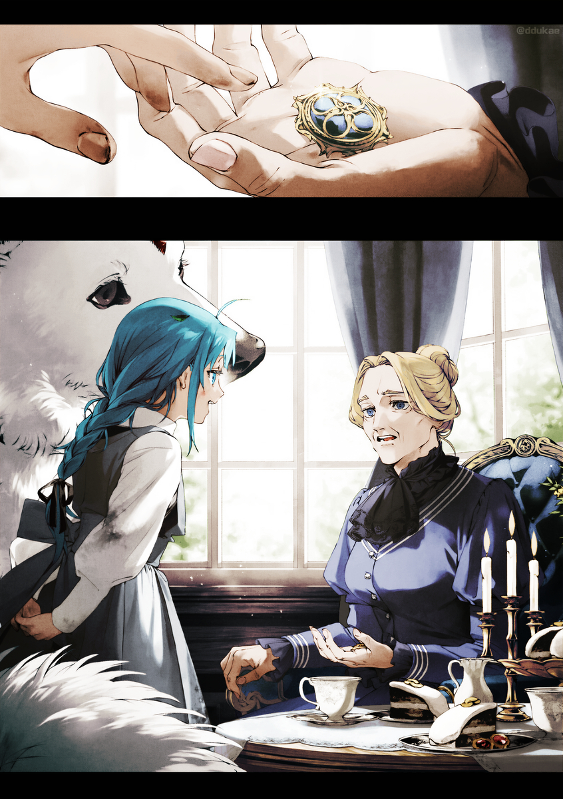

Bahçede bir sandalyeye oturmuş kitap okuyordum. Göz ucuyla, tatile gelmiş olmamıza rağmen Eris ve Sieg’in birlikte kılıç antrenmanı yaptıklarını görebiliyordum. Arus da bir süre onlarlaydı ama sonra Rudy’nin teyzesi Therese ondan bir yere gitmesini istedi ve o da gitti. Belki de şu an onun odasındadır ve Therese ona şeker falan veriyordur. Ah, o çocuk… Önüne büyük göğüslü bir kadın koyun, anında tav oluyordu. Kadınlar ileride bu çocuğun başına kesin dert açacaktı.
Lara ise bu sırada bahçede Leo ile aylaklık ediyordu. Yine bir şeyler tezgâhladığından şüpheleniyordum. Son zamanlarda o kızın yaptığı her şey bana saçlarımı yolduruyordu!
Eğer Arus, Sieg ve Lara evde uslu uslu dursaydı, bugün olaysız bir gün olmalıydı. Sylphie ve Norn, Lucie ve Clive’ı Maceracılar Loncası’nı ziyarete götürmüşlerdi. Beni de davet ettiler ama reddettim. Çocukların önünde genç maceracıların yanıma gelip, “Varlıklarını kullanarak yeni grup üyeleri mi tavlamaya çalışıyorsun, ha?” demelerini istemiyordum.
Zaten burada, Millishion’da, ortalıkta dolaşan bir iblisin tuhaf bakışları üzerine çekmesi kaçınılmazdı. Ayrıca, Lily ve Chris ile biraz zaman geçirmek istemiştim. Şimdi onlar öğle uykusuna yattığına göre yapacak bir şeyim kalmamıştı, bu da bana uzun zamandır ilk defa rahatlama fırsatı vermişti. Tek başıma kitabımın tadını çıkaracaktım.
Neyse ki Latria ailesinin kütüphanesinde oldukça ilgi çekici bir kitap bulmuştum. Adı Kutsal Büyünün Kökenleri’ydi. Özellikle necromancy (ölü çağırma sanatı) hakkındaki açıklaması çok ilginçti.
Büyük İnsan-İblis Savaşı’nda, iblisler Millis halkını Ölü Büyüsü(nekromansi) olarak bilinen büyü türüyle dehşete düşürdü: ölüleri diriltip hizmetkâra dönüştüren yasaklı sanat. Bugün bile izleri iskeletler, tayflar ve hareketli zırhlar gibi canavarlarda varlığını sürdürmektedir. Kutsal Büyü, Ölü Büyüsü(nekromansi)’yi yenmek için yaratıldı. Birinci Büyük İnsan-İblis Savaşı’nın orta dönemlerinde, Kutsal Büyü kullanan insanlar ile Ölü Büyüsü(nekromansi) kullanan iblisler arasındaki ilişki bir tür silahlanma yarışına dönüştü. Savaşın sona ermesinin ardındanÖlü Büyüsü(nekromansi) yasaklandı ve bu sanat kayboldu. Kutsal Büyü ise zirve döneminden sonra gerilemiş olsa da günümüze kadar kullanılmaya devam etmektedir.
Kitap, büyü çemberleri veya efsunlar hakkında detaya girmiyordu ve ölü büyüsü(nekromansi) denemeyi de planlamıyordum ama okurken merakımı gıdıkladığı kesindi. Geçmiş çağların bu büyü savaşı destansıydı.
“Bayan Roxy?” Arkamdan biri adımı seslendi.
“Evet?” Kitabımdan başımı kaldırdığımda Latria ailesinin hizmetçilerinden birinin orada durduğunu gördüm.
“Hanımefendi… yani, Leydi Claire sizi görmek istiyor.”
Claire Latria. Teknik olarak kayınvalidemin annesiydi, yani hemen hemen aynı yaşta olsak da rütbe olarak benden üstündü. Şimdiye kadar bana tek bir tatsız bakış bile atmamıştı ama kendisi bir iblis karşıtıydı, bu yüzden beni görmekten memnun olduğundan şüpheliydim. Ne diyecekti ki? Dürüst olmak gerekirse, bu işten sıyrılmak istiyordum.
Bunları düşünürken gözüm Eris’e kaydı.
“Hadi, duruşunu sıkılaştır! Çeneni içeri çek!” Bugün de kılıç eğitimi verirken her zamanki gibi şevkliydi. Eğer Claire’in benim bir iblis olmamla ilgili söyleyecek bir şeyi varsa sorun değildi, ama ya konu başka bir şeyse? Mesela, çocukları yetiştirme tarzımız hakkında fikirleri varsa? O zaman Eris’e de söyleyecek bir iki lafı olabilirdi. Eris karmaşık konular hakkında konuşmakta zorlanırdı ve dilini tutamazdı. Eğer Claire ona kötü bir şey söylerse, yumruklarıyla cevap verirdi. O tam olarak böyle bir kadındı.
Claire ne derse desin ona karşılık verebilirdim ama işin sonu kolayca bir tartışmaya varabilirdi.
“Pekâlâ,” dedim hizmetçiye. Bu da Rudy’nin eşi olarak görevlerimden biriydi sanırım.
***
Bu zorluğa karşı kendimi hazırlama çabama rağmen, kendimi Claire’in odasında, o sessizce çayını yudumlarken karşısında ağzımı bile açamaz halde otururken buldum. Öylece oturuyordum. Nedendir bilinmez, Lilia ve Zenith de oradaydı; Lilia benim gibi donakalmış bir haldeydi, Zenith ise her zamanki gibi sessizdi.
Dürüst olmak gerekirse, bu çok ızdırap vericiydi. Çayın yanındaki tatlılara uzanamıyordum bile. Tatlılar en sevdiğim şeydi ama Claire beni azarlayacakmış gibi hissediyordum. “Akşam yemeğinin tadını kaçırırsın” falan derdi herhalde. Aslında, bu benim de sık sık Lara’ya söylediğim bir şeydi.
Hem Lilia’yı hem de beni çağırmış olması bir tesadüf olamazdı. Kocalarımız farklıydı ama ikimiz de (biraz doğruluk payıyla) metres olarak görülebilirdik. Millis Dini metresliği kabul etmezdi. Her neyse! Hazırdım. Son zamanlarda kendime biraz fazla nazik davranmıştım ama insanların bana yöneltebileceği her türlü ağır söze hazırlıklıydım.
Bunu düşünürken Lilia’ya baktım, göz göze geldik. Görünüşe göre o da benimle aynı şekilde hissediyordu. Hatta belki de bunu benden çok daha uzun zamandır bekliyordu. Tüm bu işin iyi yanı, Claire’in Eris’i çağırmamış olmasıydı. Bu durumu gereken zarafetle idare edebileceğini sanmıyordum.
“Rudeus dışarı çıktı sanırım,” dedi Claire aniden. Odaya girdiğimden beri birinin söylediği ilk şey buydu.
“Cliff’e bir hediye götürmeye gitti.”
“İş yani. Ailesiyle tatilde olması gerekiyordu. Bu konuda tıpkı Carlisle’a benziyor.”
O sabah erkenden Rudy, Cliff’e “bebeği” teslim etmek için Elinalise ile birlikte gitmişti. Bunun tam olarak iş olup olmadığından emin değildim. Söz konusu bebek, Cliff’e göz kulak olması için yaptığı bir otomatondı. Anne’i duymuştum ve onun hakkında iyi ya da kötü bir fikrim yoktu, ama bu yenisinin biraz ürkütücü olduğunu söylemeliyim. Kısa, insan benzeri kulakları dışında, beden dilinden ses tonuna kadar tıpatıp Elinalise’e benziyordu.
Anlaşılan o ki, bu Elinalise’in fikriydi. Cliff son zamanlarda yükselişe geçmişti ve kadınlar arasındaki popülaritesi de artmıştı. Etrafı, onu evlenmeye teşvik eden insanlarla dolup taşmıştı. Bebeği ona bırakmasının bir nedeni de bu tür baş belalarına karşı bir caydırıcı olmasıydı. Bu plan, Cliff’in evleneceği kişinin bu tür biri olduğu mesajını verirken, onun bir elf olduğu gerçeğini de gizli tutmayı amaçlıyordu. Elinalise aylarca bebeğe kendi konuşma tarzını ve beden dilini öğretmişti. Yine de Elinalise’in muhtemelen bebek için aklında daha az politik bir kullanım amacı vardı.
Her halükârda, kilit bir şeylerin eksik olduğunu söyleyerek ondan hâlâ memnuniyetsiz görünüyordu. Yakından bakınca tam olarak ona benzemiyordu ama bir bakışta o kadar benziyordu ki bu tüyler ürperticiydi.
Rudy bir zamanlar benim de bir figürümü yapmıştı ama onu canlandırması için izin vermemiştim. Eğer bir gün sorarsa, reddetmeyi düşünüyordum. Rudy bile izinsiz böyle bir şey yapmazdı. Benim bir bebeğime ihtiyacı yoktu; canı ne zaman isterse gerçeğine sahip olabilirdi. Ben Sylphie değildim ama Rudy’den gelecek ara sıra taleplere hayır demezdim—yine de benden çok sapkın şeyler istememesini tercih ederdim.
Cliff ile çok yakın sayılmazdım ama Millis’in dindar takipçilerinin böyle bir şeye ne kadar sevineceğini merak ediyordum. Rudeus bunun bir sürpriz olduğunu söyledi. Bence sonunda Cliff’in ona kızmasıyla sonuçlanabilirdi ama yorum yapmak bana düşmezdi.
“Buna iş demezdim,” dedim Claire’e. “Cliff onun özellikle yakın bir arkadaşıdır.”
“Anlıyorum. Ben olsaydım, başkalarının görmesini istemediğim bir şey olmadığı sürece, bu zahmete kendim girmek yerine hizmetçilerden birine teslim ettirirdim. Sanırım bu bir gelenek farkı.”
Eyvah, haklıydı. Başka insanların görmesini istemiyordu. Ayrıca, Cliff muhtemelen Rudy ve Elinalise’in açıklaması olmadan bebeği kabul etmezdi.
“Bu arada Lilia, Aisha bugün ne yapıyor?” diye sordu.
“Aisha bu sabah paralı asker birliğini ziyarete gitti. Öğleden sonra döneceğini söyledi.”
Aisha, Arus’un bütün gün evde olacağını duyduktan sonra aniden günü paralı askerlerle geçirme kararı almıştı. Evde olmak istemiyor muydu? Şimdi düşününce, Norn da Sylphie, Lucie ve diğerlerinin dışarı çıktığını duyunca aniden onlara katılmaya karar vermişti. Tabii, Lucie de Norn’a onlarla gitmesi için yalvarmıştı.
“Sanırım o kızlar bu evden pek hoşlanmıyor,” dedi Claire iç çekerek. Çayından bir yudum aldı ama tadı hoşuna gitmemiş gibi yüzünü buruşturdu. Hâlâ kaşları çatık bir halde Lilia’ya döndü. “Lilia, en son buradayken sana karşı oldukça serttim.”
Lilia tereddütle, “Hayır…” diye cevap verdi. “Hiç de değil, Hanımefendi.”
“Özür dilemek istiyorum. Nereden geldiği belirsiz, Zenith’in kocası olduğunu iddia eden bir adam yardım istemek için kapıma dayandı, sonra tam Zenith bulunduğunda, peşinde bir kız çocuğuyla onun diğer karısı olduğunu iddia eden bir kadın ortaya çıktı. Bu durum keyfimi pek yerine getirmedi.”
“Anlıyorum, Hanımefendi. Bu beni rahatsız etmiyor.”
Claire, “Aisha hâlâ kin besliyor,” dedi.
Hava neredeyse çıtırdıyor gibiydi. Mideme ağrılar girmeye başlamıştı.
“Korkularımın aksine, Greyrat ailesine iyi hizmet ettin. Zenith bu hale geldiğinde, daha fazla nüfuz iddia edebilirdin ama sen geri planda kalıp ona baktın.”
“Beni fazla yüceltiyorsunuz. Öyle bir gücüm yoktu.”
“Sen öyle düşünebilirsin ama Zenith’in dün Kutsanmış Çocuk aracılığıyla söyledikleri, Greyrat ailesinin sana minnettar olduğunu açıkça ortaya koydu.”
Lilia sessiz kaldı.
Haklıydı. Rudy farkında olmayabilirdi ama Zenith ile Lilia’ya eşit davranmaya çalışıyordu. Lilia, Zenith’in dengiydi ama Zenith’in durumu kendini düzgün bir şekilde ifade edemeyeceği anlamına geliyordu. Eğer Lilia isteseydi, hizmetçi üniformasını çıkarıp evin hanımı pozisyonunu alabilirdi. Öyle yapsaydı, aile içindeki uyumumuz bozulur ve Zenith’e de farklı davranılırdı. Ama Lilia cazibesini kötüye kullanmamış; geri planda kalmıştı ve Greyrat ailesinin bugünkü halinde olmasının sebebi de buydu. Claire kesinlikle haklıydı.
“Aynısı senin için de geçerli, Roxy.”
“Ha?” Aniden adımı duyunca şaşırarak başımı kaldırdım ama Claire bana bakmıyordu. Gözleri kendi ellerinden Zenith’e kaydı. Sonra pencereden dışarı bakmaya başladı.
“Son birkaç gündür çocukları izliyorum. Hepsi mutlu ve sağlıklı. Lara şakalarını biraz ileri götürüyor ama çok da anormal sayılmaz.”
“Lara bir şey mi yaptı, şey?”
“Dün bana bir kurbağa hediye etme lütfunda bulundu.”
Başım döndü. Bu kızın nesi vardı Tanrı aşkına? “Ç-çok özür dilerim. Ne diyeceğimi bilemiyorum.”
“Özür dilemene gerek yok. Teşekkür mahiyetinde, kurbağayı ızgara yaptırıp öğleden sonraki atıştırmalığı olarak ona yedirdim.”
Baş dönmem geri geldi. Şimdi o söyleyince hatırladım, Lara dün bir çubuğa geçirilmiş bir şeyler yiyordu. Ne olduğunu sorduğumda sadece, “Sır,” demişti.
“Elbette, aşçılarım onu usulüne uygun hazırladı,” diye devam etti Claire. “Ben şahsen kurbağaya pek düşkün değilimdir ama bu yörenin insanları yer.”
Çok yağışlı olan Millis Kıtası’nda kurbağa ve kertenkelelerden yapılan pek çok yemek vardı. Maceracıyken ben de bu tür yiyeceklerle hayatta kalmıştım. Panzehir büyüsü kullanmayı bilmediğim zamanlarda, zehirli bir tür yiyerek neredeyse ölüyordum. Aşçıların malzemeleri kontrol ettiğinden emindim, bu yüzden Lara’ya tehlikeli bir şey yedirmemişlerdir.
Şaşırmıştım. Rudy’nin anlattıklarından, Claire’i aşırı katı biri olarak hayal etmiştim—tarif ettiği şeyi yapacak türden biri kesinlikle değildi.
“Bu sabah, atıştırmalığını çok sevdiğini ve bana mutlaka teşekkür edeceğini söyledi. Teşekkürünün ne şekilde olacağını ancak hayal edebiliyorum,” dedi Claire.
Beni mi suçluyordu? Sesi her zamanki gibi iğneleyiciydi ve yüzünde bir gülümseme belirtisi yoktu, yani muhtemelen öyleydi. Sonra hafifçe iç geçirdi. Sonunda bizi neden buraya çağırdığını söyleyecek miydi?
“Neden bu kadar gergin olduğunuzu bilmiyorum ama haberiniz olsun, Rudeus bana aile işlerinize karışmamam gerektiğini çok kesin bir dille söyledi. Söylemek istediğim şeyler var ama sözümü tutacağım.”
Bu keskin bir azar gibi çıkmıştı ama—madem öyle diyordu.
“İkinizi bugün buraya çağırmamın sebebi,” diye devam etti Claire, “diğerlerine kıyasla en yetişkin siz olmanız. Sylphiette hâlâ genç ve Eris de olgunlaşmamış. Zenith’in başına bunlar gelmeden önce nasıl biri olduğunu söyleyemem ama şu anki durumunda kimseye bakabilecek halde değil. Bana öyle geliyor ki, ikiniz bir adım geri çekilip büyük resmi görebiliyorsunuz. Ve bu yüzden… öhö, öhöm…”
Öksürerek sözünü kesti ve hizmetçiler yanına koşturdu. Ben de ayağa fırlayıp panzehir büyüsü yapmaya hazır bir şekilde ona doğru gittim. Claire hiçbir şey olmamış gibi hizmetçileri eliyle uzaklaştırdı, sonra çayının geri kalanını içti.
“Gayet iyiyim, sadece genzime kaçtı biraz. Oh—bu da ne?” Claire başını kaldırıp Zenith’e baktı. Bir an öncesine kadar Zenith boşluğa bakıyor, başka bir dünyadaymış gibi davranıyordu. Ama Claire öksürdüğünde, Lilia’nın yardımı olmadan ayağa kalkmış ve şimdi boş gözleriyle ona bakıyordu.
“Belki de dinlenmelisiniz.” Konuşan Lilia’ydı ama sözler neredeyse Zenith’in ağzından çıkmış gibiydi.
“Aman Tanrım, küçücük bir öksürük için bu kadar telaş, bir de bastonumu gördüklerinde herkesten aldığım o şok olmuş bakışlar… Sırtım ağrıyor olabilir ama ciğerlerim gayet iyi. Zenith, bana öyle bakmayı kes ve otur.”
Claire “bana öyle bakmayı kes” dediğinde Zenith’e tekrar baktım ama yüzü her zamanki gibi ifadesizdi. Soru sorarcasına Claire’e baktım, o da şaşırmış görünüyordu. Sandalyeme geri döndüm ve Lilia da Zenith’in elinden tutup tekrar oturmasına yardım etti.
Bir süre sessizce oturduk. Şok Claire’in yüzünden yavaş yavaş silindi ama duygularının o kadar çabuk yatışmayacağı belliydi.
“Topluma ilk çıkışıydı,” dedi aniden. “Zenith’in katıldığı ilk soylular partisinde, eve dönerken merdivenlerde takılıp düşmüştüm.” Sesi neredeyse sevgi doluydu. Gözlerini indirdiğini ve sesine gizli bir hıçkırık gibi başka bir tınının eklendiğini fark ettim.
“Ciddi bir yara almamıştım ve iyileştirme büyüsü beni hemen düzeltti. Ama tuhaf. Az önce, Zenith’in bana o günküyle aynı şekilde baktığını hissettim.”
Claire’in eğik yüzünden bir şeylerin şıpırtısı duyuldu. Yakındaki bir mendili alıp gözlerini sildi.
“Zenith çok takdir edilirdi. Ona kızım demekten gurur duyardım. Ben… onu iyi yetiştirdiğimi sanmıştım…” Claire’in omuzları sarsıldı.
Ona ne diyeceğimi bilemeden, tek yapabildiğim izlemekti. Aklıma bir düşünce geldi. Çocuklarımın geleceği hakkında hiç ciddi olarak düşünmüş müydüm? Rudy ile evlenmiş, Lara ve Lily’yi doğurmuş, sonra da büyü üniversitesinde öğretmenlik yapmak için onları ailenin bakımına bırakmıştım. Evdeki çocuklara Sylphie ve Lilia, okuldaki çocuklara ise ben bakıyordum. Bu beni tatmin ediyordu, bu yüzden çocukları nasıl yetiştirdiğimizi hiç sorgulamamıştım.
Kendi kızım Lara’nın Lucie’den daha az çalışkan ve yaramazlığa daha yatkın olması beni biraz endişelendiriyordu. Bunun benim bir iblis olmamdan mı yoksa onun yarı insan olmasından mı kaynaklandığını merak etmiştim. Ben endişelenirken yıllar geçti ve Lara büyüdü. Diğer çocuklarla uyum sağlamış, Arus ve Sieg ile yakındı. Biraz daha büyüyünce durulacağından emindim. Bu konuda düşündüklerim bu kadardı. Yani, çoğunlukla.
Asıl düşünmediğim şey ise bundan sonra ne olacağıydı. Söylenene göre Lara bir kurtarıcıydı ve bu kulağa ağır bir sorumluluk gibi geliyordu. Bunun tam olarak ne anlama geleceğini bilemezdim. Muhtemelen, İnsan-Tanrı’ya karşı savaşta yer alacaktı. Peki ya ondan sonra? Savaştan sonra bile hayat devam ederdi.
Aslında, gelecek için endişelenmenin bir faydası olmayacağının farkındaydım.
“Affedersiniz,” dedi Claire. “Duygularıma hâkim olamadım.”
“Hiç de değil,” dedim.
“İnsan benim yaşımda kolayca gözyaşlarına boğuluyor.”
Claire mendili masaya geri koyarken gözleri kıpkırmızıydı. Dün katedralde, Kutsanmış Çocuk Zenith’in sözlerini aktardığında da ağlamıştı.
“Öhöm.” Boğazını temizledi. “Burada, Millis Kutsal Ülkesi’nde, çarpık ailelerin çarpık çocuklar yetiştirdiği söylenir. Ben de bu görüşü paylaşıyorum.” Bize delici bir bakış attı. “Greyrat çocukları sağlıklı ve hiç de çarpık görünmüyorlar. Zenith de kesinlikle çarpık değildi. Yine de sizden dikkatli olmanızı rica ediyorum. Eğer bir şeyler ters giderse, bunu ilk fark edecek olanlar, koruduğunuz o uygun mesafeden gözlem yapan siz ikiniz olacaksınız.”
Bir şeylerin ters gitmesi—tıpkı Zenith’in evden kaçması gibi. Bu olasılık tabii ki vardı. Özellikle Lara’nın aklından ne geçtiği hakkında hiçbir fikrim yoktu. Öte yandan, bu Lara olmayabilirdi. En uyumlu görünen çocuklar risk altında olanlar olabilirdi. Mesela Lucie okulda örnek bir öğrenciydi ama bir şeyler ters gitmek üzereyken bunu gerçekten fark eder miydim?
Öf. Üzerimdeki beklentilerin ağırlığı midemin kasılmasına neden oldu.
“Size iletmek istediğim mesaj buydu,” diye sözünü bitirdi Claire ve sandalyesine geri gömüldü.
Lilia ve ben birbirimize baktık. Benim kafa karışıklığımın aksine, Lilia kararlı bir tavırla Claire’e döndü.
“Anlaşıldı, Hanımefendi,” dedi. “Gereğini yapacağımdan emin olabilirsiniz.” Sesi, çok önemli bir görev verilmiş bir asker gibi çıkmıştı. Bu özgüven, Norn ve Aisha’yı—hatta şimdi düşününce Rudy’yi de—yetiştirmiş olmasından geliyordu herhalde.
“Ben de yapacağım,” diye ekledim. “Elimden geldiğince.” O kadar özgüvenli değildim. Sonuçta, bir öğretmen olarak pek çok farklı insanı gözetlemiştim ama hâlâ öğretmenlikte iyi olduğuma ikna olmamıştım. Yine de, Sylphie ve Eris’in sunabileceğinden farklı bir eğitime ihtiyaç duyan çocuklara bir alternatif sunmak bile olsa, bunu başarabileceğime emindim. Başarmak zorundaydım.
Beni cesaretlendiren başka bir şey daha vardı. Claire’in sahip olduğundan emin olduğum çekincelere rağmen, bana bir eşit olarak davranıyordu. Bir iblis sürgüncüsü, iblislerden hoşlanmamaktan kendini alamazdı ve ben de neysem oydum. Claire benim için taviz veriyordu ve ben de onun beklentilerini karşılamam gerektiğini hissettim.
“Hm?” Tam o sırada kapı açıldı ve beyaz bir köpek odaya girdi. Doğal olarak, Lara da sırtındaydı. Nedendir bilinmez, her yeri çamur içindeydi: ayakkabıları, kıyafetleri, her şeyi. İçeri girmeden önce ayakkabılarındaki çamuru silmesini ona kaç kez söylemiştim?!
Laf olsun diye, “Lara, evin içinde Leo’nun sırtına binmemelisin,” dedim.
Lara suratını astı ama Leo’nun üstünden indi. Okulda bile, arkamı döner dönmez üzerine tırmanıyordu. Bu sinir bozucuydu.
İndikten sonra Lara yavaşça Claire’in yanına gitti.
“Büyük-Büyükanne, havalı bir şey buldum,” dedi Lara.
“Neymiş o bakalım?” diye sordu Claire.
“Bu.”
Lara cebinden yuvarlak ve altın rengi bir şey çıkardı. Oturduğum yerden tam göremiyordum ama bir kolyeye veya benzeri bir şeye benziyordu. Claire onu görünce gözleri fal taşı gibi açıldı.
“Bunu nerede buldun?” diye sordu.
“Bahçede, yerde. Onu arıyordun, değil mi, Büyük-Büyükanne?”
“E-evet, çok uzun zamandır arıyordum… ama nasıl?”
“Dün, Büyükanne senin onu hep taktığını, bu yüzden bir yerlere düşürmüş olman gerektiğini, sonra da onu ararken sırtını incittiğini söyledi.” Bunu söylerken Lara, Zenith’e baktı. Bu, Kutsanmış Çocuk’un güçlerinin Zenith’in düşüncelerinden ortaya çıkardığı şeyler arasında yoktu… Bu da Lara’nın bunu kendisinin duymuş olması gerektiği anlamına geliyordu.

Claire, “Onu aramaya mı gittin?” diye sordu.
“Dünkü atıştırmalığım için sana teşekkür etmek istedim.”
Claire sessiz kaldı.
Lara, çayın yanında gelen tatlıların durduğu masaya bakarak ekledi: “Lezzetliydi ama atıştırmalık olarak şunları tercih ederim.”
“Alabilirsin,” dedi Claire.
“Teşekkürler!” Lara bir bisküvi kapıp ağzına attı. Bir tane daha, sonra bir tane daha derken, göz açıp kapayıncaya kadar masadaki her şeyi silip süpürdü. Tam ona en azından önce ellerini yıkamasını söyleyecektim ki benimkileri de yediğini fark ettim.
“Hey.” Kendi kendime homurdandım, aslında o kadar da önemli bir mesele olmasa da. Rudy’den istemem yeterliydi, canımın istediği kadar tatlı yiyebilirdim. Yemeğimi aldığı için çocuğuma kızacak değildim. Ama, bilirsiniz işte, benim atıştırmalıklarım…
“Mmm!” Lara, yanakları patlayacak gibi dolmuş bir halde, keyifle çiğnedikten sonra büyük bir yudumda yutkundu.
Leo ona, “Peki ya benimki?” der gibi inanmaz bir bakış attı. Muhtemelen benim de yüzümde benzer bir ifade vardı.
“Kurbağadan çok daha iyi!” diye ilan etti Lara.
“O halde yarın yine yersin,” dedi Claire.
“Süper.” Bununla birlikte Leo’nun sırtına atladı ve ikisi odadan ayrıldı. O kadar şaşkındım ki, içeride Leo’ya bindiği için onu azarlamadan gidişini izledim.
Telaşla, “Ben, ıı, özür dilerim,” dedim. “Görgü kurallarını bilmiyor.”
Şansıma, Claire Lara’nın getirdiği eşyaya kilitlenmişti. Öne eğilince, içinde genç bir adamın portresi olan altın bir madalyon olduğunu gördüm.
“Bunu bana evlenmeden hemen önce Carlisle vermişti,” dedi Claire. Ben sessiz kalınca, nostaljik bir tonda devam etti. “O zamanlar böyle pahalı bir hediye gücünü çok aşıyordu ama parayı denkleştirip benim için almıştı. ‘Evlendikten sonra bir Latria olacağım ve sana bir daha asla kendi paramla hediye alamayacağım,’ demişti. Yaklaşık bir yıl önce kaybettim ve o zamandan beri eğilip bükülerek onu arıyordum. Sırtımı da bu yüzden incittim. Onu bulmaktan umudumu kesmiştim…”
Hizmetçiler bile buna şaşırmış görünüyordu. Kaybettiğini hizmetkârlarına bile söylememiş miydi?
“Roxy,” dedi Claire.
“Evet?”
“Görgü kuralları başkalarına düşünceli davranmaktan başka bir şey değildir—resmiyete takılıp kalmaya gerek yok, değil mi?”
“Şey, sanırım yok.”
“Lara, görgü kuralları mükemmel olan iyi bir kız. Ben yanılmışım.”
Hmm, Lara’nın pek de öyle bir kız olmadığından oldukça emindim ama karşı çıkmak bana mı düşerdi? Claire’i yanlış anlamıştım. Rudy’nin surat asmalarını ve Aisha’nın açıkça hoşnutsuzluğunu gördükten sonra gardımı almıştım ama o hiç de beklediğim gibi biri değildi. Rudy ile tanışmak onu da değiştirmiş olabilirdi. Onun tarafından değiştirilmemek zordu.
Her halükârda, bu hanımefendiyle anlaşabileceğimi hissettim. Çok uzun yaşamayacak olsa bile. Bu ziyaret bittiğinde, onu bir daha asla göremeyebilirdim.
“Onu doğru yolda tutun,” dedi Claire.
“Evet, Hanımefendi,” diye onayladım.